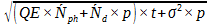
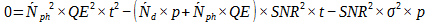
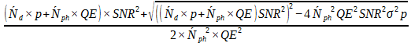
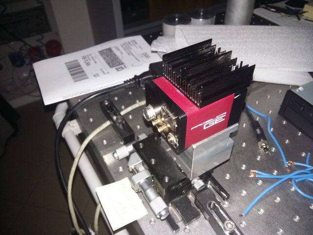
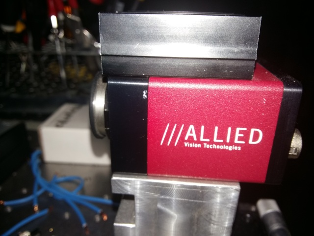
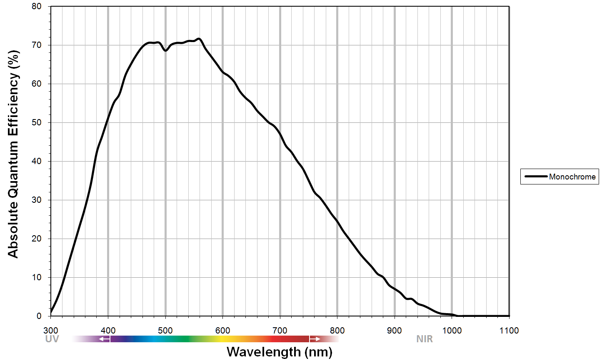
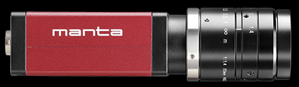
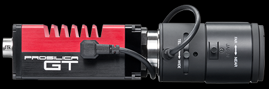
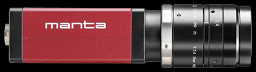
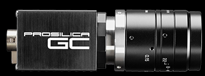

Chapter 1 Choice of sensors
Before starting, some definitions are needed for a better understanding:
- dark current: signal detected when there is no light, this is its own radiation
- quantum efficiency: ratio between the number of electronic charges collected and the number of photons incident on a reactive photo surface
- binning: grouping information of several pixels into one, which increases the sensitivity. However the accuracy decreases. There are two types: A first that is in vertical or horizontal line, a second in two dimensions (for example a pixel groups the data acquired in a square of 4 pixels). It helps to act on digital noise
- plate scale: connection between the angular separation of an object with the linear separation of its image in the focal plane
- ADU (Analog-Digital Units) : number in binary writing
There is a constant presence of noise that limits the accuracy of the image and can hide stars that do not have enough brightness. It comes from three sources:
- Thermal noise determined by the product of dark current ( ´Nd ) and time(t)
- Digital noise determined by the product of the number of incoming photons per second ( ´Nph) , time (t) and quantum efficiency (QE)
- Noise of reading by the device (standard deviation, σ ) with p the number of pixels
The standard deviation of noise is as follows:

The signal received is: QE*´Nph*t
The SNR is the ratio of the two. It was set at 3. We then have an equation, in which we will isolate the time to determine which GigE interface (Gigabit Ethernet) camera is the most efficient. We then obtain a second degree equation in t:

We choose to keep the highest solution:

For the choice of the camera, I used the following catalog that I had to re-read whenever my tutor asked me to look for new information: https://www.alliedvision.com/en/products/cameras.html#interfacefilter%2F3%2F
They already had a camera, equipped with ON Semi sensor KAI-04022. Only, it no longer meets the performance criteria, hence my intervention in the search for a new camera. You can see it on the photos below:


To define quantum efficiency, I averaged its value for wavelengths between 400nm and 590nm. So I have not treated those that have infrared application range.
Example of a quantum efficiency graph as a function of the wavelength of the ray incident on the sensor

Why this range of values?
Most stars are red (except those who are young and blue). Blue light is used for this camera and the rest is used for data collection that will allow the creation of the image.
I applied a criterion on the size of the sensor for a given magnification to avoid that some light rays are not treated because of a sensor too small. For that, I multiplied the height of the sensor by the flat scale and I checked that this is superior to 12 seconds of arc (arcsec), criterion required. I then looked for different information such as dark current and read-out noise in different documents such as their instructions or comparative tables between different sensors. Since dark current information is difficult to find, 14 sensors could not be processed later. In addition, it varies greatly with temperature. It was necessary to check that the ambient temperature during its measurement is between 5 and 20 ° C. Then, I looked for the most important possible binning per sensor because it reduces the digital noise so it influences the time needed to process the information.
Finally, I tried larger scale scales. The one previously considered was 1/770 arcsec/μm. I tried multiplying this value by 2, 3 and 4. The distance between the mirror and the camera will always be the same. However, in order to shrink the image and thus be able to use a smaller sensor, it is possible to add between these two elements a diverging lens that would allow the outgoing rays to be parallel to the axis (image focus on the object) and a convergent lens whose focus image would be on the camera (see following drawing in the next page). I calculated which scale scale would be needed for each camera that does not have a large enough pixel count. With the initial flat scale, the most powerful sensor that can be chosen is the Sony IMX304, which corresponds to the Manta G-1236 camera (see photo below):
The dynamic is not only present in these graphics. The text of the result is also dynamic. I mean that there is some parts of the sentences that are constants and others no. How is it possible? It is by using some variables defined inside a chunk. Then they are called by using “`r nameVariable”. Of course, it should finish with the symbole used just before the r, but if I do it, the command will be used in this report and you won’t be able to see it.

Applying binning, the most effective sensor is the Sony ICX814, present in the Manta G-917 and Prosilica GT 3400 cameras (see photos below):


With the application of binning and the use of appropriate lenses, the most effective sensor is the Sony ICX414 present in the cameras Manta G-033 and Prosilica GC 655, see the photos below:

